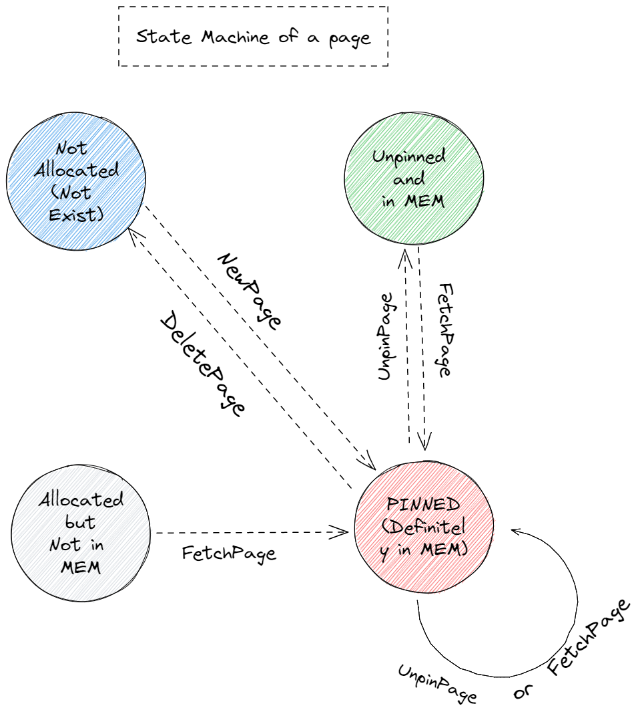
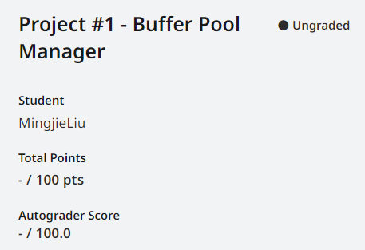

CMU15445-project1 Buffer Pool Manager
本文最后更新于：2 天前
Buffer Pool Manager
cmu15445 是一门关于数据库管理系统（DBMS）设计与实现的经典公开课，是很多dba和内核开发人员的入门课程。开课教授Andy Pavlo 非常风趣幽默，他有自己上课的DJ，他曾在浴缸里录课，且时常语出惊人。这门课的实验项目BusTub非常有挑战性，并对所有人开放评测资源。
Overview
BusTub是一个面向磁盘的 DBMS(Database Management System)。由于磁盘上的数据不支持字节粒度的访问，这就需要一个管理页的中间层，而 Andy 坚持"The OS is not your friend"， 反对使用 mmap 进行页操作，因此实验一的目标便在于通过实现 Buffer Pool Manager 主动管理磁盘中的页（page）在内存中的缓存，从而，最小化磁盘访问次数（时间上）、最大化相关数据连续（空间上）。
这次实验有三个子任务，分别是
- Task #1: Extendible Hash Table
- Task #2: LRU-K Replacer
- Task #3: Buffer Pool Manager Instance
可拓展哈希表是这个是实验中相对独立的模块。这里不会讲它的细节，后面的两个任务中需要用到哈希表的地方我直接用std::unordered_map替代，而且效率还更高。应该是因为 Extendible Hash Table 要求线程安全，为了方便在我在每个函数入口都加了大锁。
想要 Extendible Hash Table 具体细节的可以看这个b站视频。关于它的优化，我想可以进行更细粒度的锁管理甚至写一个无锁(lockfree)的哈希表。
Buffer Pool Manager
在后两个实验开始之前，我建议先将Task #2和Task #3的实验材料完整的看完在开始写代码。因为 replacer 和 buffer pool manager 有较大程度的耦合。很多API设计需要对照两个组件才能知道自己应该维护的数据与功能的边界。为了更符合直觉，我会先阐述 buffer pool manager 的设计，同时会穿插着 LRU-k 的API什么时候，在哪用。
Buffer Pool Manager 维护的数据的基本单位为一段逻辑连续的字节数组，在磁盘上表现为页（page），页内部结构有自己的一些结构（包括header, content等），在这个实验中我们只关心 page_id_ (页的唯一标识)， pin_conut_ 以及 is_dirty_ 。对应在内存上，我们用 frame 这个词代表 框，就是装着某个物理页的框。在代码中其实就是buffer pool管理着一大片内存 Page pages[pool_size_]，但是 buffer pool 初始化时（资源获取时）我们得到的 pages 并不包含我们想要的页，它里面的数据是没有意义的，从而它是一个空的框。frame_id指的就是这个数组的下标。里面装的页有自己的page_id。另外，我们用一个哈希表page_table_保存从 页号(page id) 到 框号(frame_id) 的映射。
管理帧的内存池大小一般来说是远小于磁盘的，因此在内存池满了后，再从磁盘加载新的页到内存池，需要某种替换策略（replacer）将一些不再使用的页踢出内存池以腾出空间。
buffer pool manager 的实现核心在于对所有 page 的状态的管理。每个page有四种状态：
- Not Allocated(Not Exist): 我们将不存在的 page 也当作一种状态
- Allocated but Not in MEM: allocated 但是不存在于内存中（某一时刻内存装的 page 达到上线后被 evict 出内存）
- Unpinned and in MEM: 随时可能被 evict
- Pinned(definitely in MEM)
这几种状态是互斥的
待实现函数：
1 | |
便是驱动状态机中上述状态发生改变的动作（action），（注意： AllocatePage 和 DeallocatePage不对外部公开） 状态机如下：
每个函数声明处的注释已经非常详细的描述了函数行为了。以下列出一些我在做的时候容易困惑的点：
page_table_维护的只是在内存中的page的page_id到frame_id的映射。也就是说它不保存 Allocated but not in MEM 的 page（因为在磁盘上的page也没有一个到frame_id的映射）Unpin操作并不一定会使 page 变成 Unpinned and in MEM，因为这只是这一个 worker（一般来说是一个thread） 对该 page 进行 unpin，其他线程可能也正在读取这个 page 的内容。 只有当 某次 Unpin 操作后，它的pin_count_等于0时，才能让这个 page 变成evitable的状态（在 replacer 中维护）AllocatePage只在NewPage中用到，DeallocatePage只在DeletePage中用到Unpin的is_dirty参数为 true 时，将这个 page 的is_dirty_设置为true， 而当参数为false时，不可以将page的 is_dirty_ 设置为false! 而应该保持原 dirty 状态不变 因为is_dirty参数表示的只是这个线程是否对这个 page 有修改操作。（这个点害我debug了好久）
现在我们借助 replacer 的 API 来理解一下每个 page 在他的生命周期中需要被维护什么内容。
1 | |
以 FetchPageImpl 为例强调下一些实现的细节。
1 | |
LRU-K Replacer
LRU-k evict policy 是让访问次数未到 k 的结点会被优先 evict 出去（这么做或许是为了防止一些微小的 扰动访问 污染了原来经常访问的区域），然后对于访问次数到达 k 次的结点则按照最近访问时间（或逻辑上的时间戳）最久远的被 evict。（实际上按照原始论文和 slides 上的意思应该是最近访问时间和第前 k 次访问时间之差相差最大的被 evict，但是按照前面的方法也过了。。。）
- LRU-k的原始论文
- leetcode上的lru算法，不熟悉的可以先试试
针对 LRU-k 算法，我实现了两种方法，简单说一下思路。
方法一
维护两个链表，一个存未到 k 次访问的frame_id,另一个存已到（或超过）k 次访问的 frame_id，我们分别将其叫做 history_list以及cache_list。
同时维护一个从frame_id到 FrameEntry的哈希表，这个FrameEntry保存了hit_count，evictible以及一个list<frame_id_t>的迭代器。
- Evict: 若 hist_list 非空，找到第一个 evictable 的 frame 将其踢出，否则找cache_list 中第一个evictable 的 frame。
- RecordAccess(frame_id): 通过
FrameEntry查看 hit_count （1）若他是第一次访问，则将其放在 history_list 尾部，注意，同时还要维护这个 frame_id 在FrameEntry 中的迭代器 。（2）若 new_count == k 则在history_list中删去这个frame(无需遍历，通过保存在哈希表中的迭代器进行 删除)，添加到 cache_list 中，同时维护哈希表 （3）new_count > k，将这个 frame_id 移动到 cache_list 最后（删除和添加都可以做到 ） - SetEvictable 和 Remove都可以类似的操作。
方法一时间复杂度：
假设 history_list 和 cache_list 中的元素个数都是 n， 两个队列中 non-evictable 的个数都为 m，则 Evict 的时间复杂度为 （最差遍历 m 个元素） 其余操作时间复杂度都是 。需要注意的是，RecordAccess 要比 Evict 经常使用的多，且 Evict 遍历 m 个元素是在 non-evictable page 都在 evictable page 的先前访问。实际上可以看作一个常数。
方法二
为了绝对 的 evict，我们可以使用std::set（红黑树），结点内部维护 hit_count 和 到达时间，需要重载<=，就可以达到。但是这种做法不仅常数大（结点之间比较需要先比较访问了k次没有，对到达k次和没到达k次的结点还需分别比较），更致命的是它使得 RecordAccess(frame_id)的复杂度变成 （需要一次 find， 一次 delete，一次 insert）。
Summary
这是四个实验（不算primer）中最简单的一个了，如果实在卡在某部分的话试试通过分析测试样例来得到预期行为，或者使用 gdb （可以使用 lldb 配合 vscode 代替命令行条件下进行调试）。相信我，越早学会如何调试对后面越有益。
最后当然是 AC 截图了

Resources
- 课程官网
- Github Repo
- Youtube课程视频 2022fall （如果对英文字幕有压力的话可以在 chrome 插件里下个中英文双字幕插件）
本博客所有文章除特别声明外，均采用 CC BY-SA 4.0 协议 ，转载请注明出处！